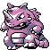
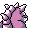

#112
Rhydon
GroundRock
Protected by an armor-like hide, it is capable of living in molten lava of 3,600 degrees
Base stats Total 440
HP115
Attack130
Defense110
Speed40
Special45
Details
- Species
- Drill
- Height
- 6'03"
- Weight
- 265.0 lb
- Catch rate
- 60
- Base exp
- 204
- Growth
- Slow
Level-up moves
LevelMoveType
StartHorn AttackNormal
StartStompNormal
StartTail WhipNormal
StartFury AttackNormal
Lv 8Sand-AttackNormal
Lv 18Rock ThrowRock
Lv 21LeerNormal
Lv 31DigGround
Lv 39Take DownNormal
Lv 42Rock SlideRock
Lv 46EarthquakeGround
Lv 50Hyper BeamNormal
Lv 54Stone EdgeRock
TM / HM
TM01 Mega PunchTM03 Swords DanceTM04 CrunchTM05 Mega KickTM06 ToxicTM08 Body SlamTM09 Take DownTM10 Double-EdgeTM11 BubblebeamTM12 Water GunTM13 Ice BeamTM14 BlizzardTM15 Hyper BeamTM17 SubmissionTM18 CounterTM19 Seismic TossTM20 Pay DayTM24 ThunderboltTM25 ThunderTM26 EarthquakeTM27 FissureTM28 DigTM31 MimicTM32 Double TeamTM34 BideTM37 FlamethrowerTM38 Fire BlastTM44 RestTM48 Rock SlideTM50 SubstituteHM01 CutHM03 SurfHM04 Strength